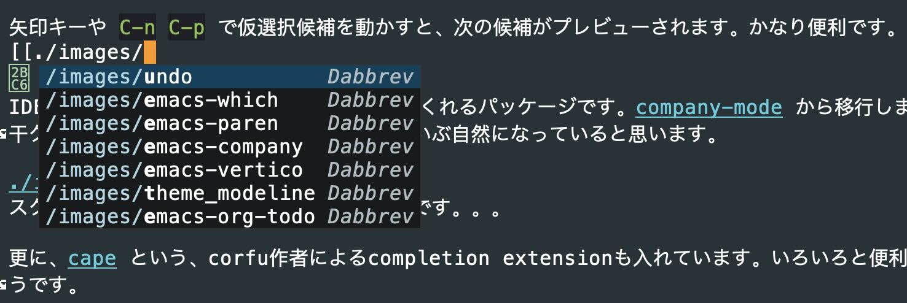
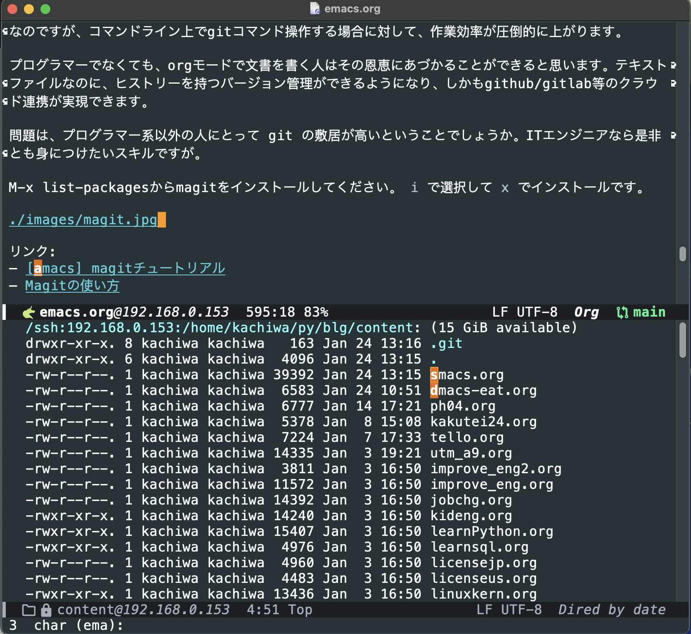

Table of Contents
- 1. はじめに
- 2. emacsについて
- 3. 使っている機能とconfig
- 3.1. パッケージソースを追加
- 3.2. use-package
- 3.3. materialテーマ と doomモードライン
- 3.4. 雑多な設定
- 3.5. ウインドウ間移動
- 3.6. アイコンフォント
- 3.7. dired
- 3.8. ソースファイルを見やすくする設定
- 3.9. which-key
- 3.10. vundo (undo-tree)
- 3.11. Completion系パッケージ
- 3.12. Python
- 3.13. 16インチMacBook Pro用設定
- 3.14. email設定
- 3.15. eat
- 3.16. org-mode
- 3.17. magit
- 3.18. tramp-mode
- 3.19. GUIモード
- 3.20. avy
- 3.21. pdf-tools
- 3.22. eww
- 3.23. ace-link
- 3.24. dslide
- 3.25. 入れようとしてうまくいかなかったパッケージ。。。
元々2022-06-22に作成したエントリーですが使用実態にあわせて時折アップデートしています。今回、大幅に加筆修正して新エントリーとしました。
更にアップデート。use-packageのドキュメントを読みました。。。
1. はじめに
業務効率を上げるために、emacsの使いこなしに注力しています。元々org-modeによるドキュメント書きやPythonスクリプト開発にしか使っていなかったのですが、最近以下の機能、パッケージを使うようになり、50年前からあるツールとは思えないくらい使い勝手が向上しました。
- use-package - パッケージマネージャー
- magit - gitフロントエンド
- vertico + fussy + marginalia + consult + corfu - 補完、絞り込み
- GUIモード
- tramp-mode - リモートマシンのシームレスアクセス
- dired - ファイラー
- eat - ターミナル
- avy - カーソルのジャンプ移動
- pdf-tools - PDFビューワー (emacsが落ちるようになるので外しています)
- eww - テキストベースブラウザー
2. emacsについて
2.1. emacsとは
emacsはかつてviと人気を二分するエディタアプリでした。最近ではIDE(統合開発環境)としてVSCodeなどと比較されているのを目にします。emacsのorg-modeは最高のメモ(note taking)アプリとして非常に評判が良いです。emacsでメールを読み書きしたり、ターミナルやPDFビューワーとして使うこともできます。
逆に、IDEのVSCodeをプログラミング用途以外、例えばノートをとったり、メールを書いたりするために使うでしょうか。emacsは単なるエディタの枠を超えて、様々な用途で使われています。これは、emacsの拡張性が他に並ぶものがないほど高いためです。
emacsの本質は、それがlisp言語の一つであるemacs lisp = elispの開発及び実行環境であることです。emacsの多くの部分はelispで書かれたコードからなっており、同様にelispでアドオン機能を書くことで、いかなるワークフローにも対応できるようになります。そして、それらのワークフローにemacsのお家芸である、統一の取れた優れたテキスト操作性という付加価値をもたらします。熱狂的なemacsファンがコンピューター上のあらゆるワークフローにemacsを使いたがるのはそのためです。
2.2. 多くのパッケージ
emacs上で新たにやりたいことが出てきた場合、大抵は既に誰かがその用途のためのパッケージを作って公開してくれています。むしろ、いくつかのパッケージの中から、自分のワークフローと好みに最も近いもの選ぶ方が大変なほどです。
コンピューターの用途はずっと変わり続けています。emacsが生まれた当時、コンピューターは多くの人が共有して使うものであり、動画もSNSもありませんでした。時代とともに新たな用途が出現するにつれて、emacsの使われ方もそれらに追従してきました。今のemacs及びその拡張パッケージ群は、20年前には想像しえないほど進化しています。
2.3. カスタマイズ性
emacsはパッケージの多さだけが特長なわけではありません。むしろ、多くのパッケージをもたらしたのは、emacsの唯一無二とも言える拡張性、カスタマイズ性の高さによるところが大きいです。emacsのパッケージはほとんどがelispで書かれており、カスタマイズにもelispを使います。elispマシンであるemacsにとって、外部パッケージも、あなたがelispで書いたカスタマイズも同じです。それどころか、emacsの多くの標準機能もあなたのカスタマイズと変わりはありません。
これって結構すごいことです。あなたがインストールしたパッケージやカスタマイズも含めて、あなたの使うemacsの一部なのです。言い方を変えると、emacsにとって、elispで書かれた標準機能もパッケージもあなたが書いたカスタマイズも、emacsが実行すべきelispのコードであるという意味において、同じものです。
他のアプリでもカスタマイズメニューや設定ファイルを使ってカスタマイズすることができます。また、極端なことを言えば、オープンソースであればソースコードを変更してビルドしなおすことでいかなるカスタマイズや拡張も可能となります。しかし、実行時に自身を書き換えられるソフトウエアはemacsくらいです。
2.4. プロ用のツール
emacsはプロフェッショナルのためのツールです。この意味するところは、効率よく使えるようになるまでに学ぶことが多く、時間がかかることです。emacsは実際に手を動かして試行錯誤することが好きな人のためのツールです。新たなパッケージを使うには、ドキュメントを読み、うまく動かない場合には更にドキュメントやネットで調べる必要があります。
最近のemacsはマウスを使ってメニュー操作できるようになり、初心者に優しくなりましたが、効率を上げるためには独特のキーバインドを頭と体で覚えていくしかありません。このことが、emacsが敬遠される最大の要因です。emacsを使いこなす前に諦めてしまうのです。
しかし、一度操作性を身に着けてしまえば、emacsはずっとあなたの役に立ち続けてくれることでしょう。emacsは50年に渡って変化の激しい時代を生き残ってきました。今後10年、20年と使われ続けていく可能性は高いと思います。
惜しむらくは、emacsは既にemacsに慣れているパワーユーザー向けにデザインされているため、慣れるのに時間がかかることです。今の時代に、数週間から1ヶ月も修行しないと使えるレベルにならないツールに興味を持つ人は少数派と思います。
しかしある一線を越えると、非常に生産性の高い唯一無二の世界が待っていますので、少しでも興味があって、勉強や試行錯誤してもよいという方は是非ともemacsを使っていただきたいと思います。
リンク:
3. 使っている機能とconfig
3.1. パッケージソースを追加
(require 'package)
(setq package-archives
'(("gnu" . "https://elpa.gnu.org/packages/")
("melpa" . "https://melpa.org/packages/")
("nongnu" . "https://elpa.nongnu.org/nongnu/")
("org" . "http://orgmode.org/elpa/")))
(package-initialize)
(when (not package-archive-contents)
(package-refresh-contents))
最近のemacsバージョンでは、これを入れただけで、gnuにアクセスできないだの、645357D2883A0966のpublic keyが無いだの文句を言われて途方に暮れるかもしれません。その場合、以下が効くかも。(キーをインポートしています。それくらいしておいてくれたらいいのに。。。)
gpg --homedir ~/.emacs.d/elpa/gnupg --keyserver hkp://keyserver.ubuntu.com --recv-keys 645357D2883A0966
その後emacs内で、更におまじないを。
M-x package-refresh-contents
3.2. use-package
emacsの追加機能(パッケージ)は ~/.emacs.d/init.el で設定しますが、これを見やすく、書きやすくするありがたいパッケージです。 :ensure t を入れるとパッケージの自動インストールもしてくれます。 :command や :bind 等を指定したときの暗黙のautoload(遅延ロード)がありがたいですが、若干分かりづらいですね。
パッケージのgithub READMEには、use-packageを使った設定の説明が増えてきていて、多くのemacsユーザーに浸透しています。日本ではより高機能な leaf が有名ですね。
;; for use-package (unless (package-installed-p 'use-package) (package-install 'use-package)) (require 'use-package) (setq use-package-always-ensure t)
3.3. materialテーマ と doomモードライン
テーマは好き嫌いがあると思いますが、私はmaterialテーマを好んで使っています。
doomモードラインは、画面の下から2行目にある情報表示行のモードラインをcoolにしてくれるパッケージです。ミニマリストデザインで格好よく、視認性がとても良いです。下記イメージはmaterialテーマを適用しています。緑枠で囲った部分がモードラインです。
~/.emacs.d/init.el には以下を設定しています。
;; Material theme (use-package material-theme :ensure t :load-path "themes" :config (load-theme 'material t)) ;; doom modeline (use-package doom-modeline :ensure t :init (doom-modeline-mode 1))
3.4. 雑多な設定
- スタートアップメッセージは不要です。
- バックアップファイルも不要です。
- カーソル位置はモードラインにシンプルに表示します。
- スクロールは1ライン単位が見やすいと思います。
- 耳障りな音は元から絶ちます。
- いちいち"yes" "no"を入れるのが面倒なので、'y' 'n'にします。
- メニューバーやツールバーは不要です。
;; No startup message (setq inhibit-startup-message t) ;; no backup files (setq make-backup-files nil) (setq auto-save-default nil) ;; Delete auto-save files (setq delete-auto-save-files nil) ;; columm and line number (column-number-mode t) ;; 1-line scroll (setq scroll-conservatively 1) ;; silence bell (setq ring-bell-function 'ignore) ;; yes or no to y or n (fset 'yes-or-no-p 'y-or-n-p) ;; hide menu/tool bar (menu-bar-mode 0) (tool-bar-mode 0)
3.5. ウインドウ間移動
複数ウインドウを表示しているとウインドウ間のカーソル移動を多用するので、 C-x o (other-window)を M-o にもマッピングしています。更に、3つ以上のウインドウがあるときに感覚的にウインドウ間移動ができるようにwindmoveを入れました。
;; for faster movements between windows
(global-set-key (kbd "M-o") 'other-window)
(use-package windmove
:ensure t
:bind*
(("M-<left>" . windmove-left)
("M-<right>" . windmove-right)
("M-<up>" . windmove-up)
("M-<down>" . windmove-down)))
(global-set-key [remap list-buffers] 'ibuffer)
3.6. アイコンフォント
なんとなく、all-the-iconsから後発のnerd-iconsに乗り換えました。
コメントにあるように、 nerd-icons をインストールしておくと、見た目がとてもcoolになります。
インストールは M-x nerd-icons-install-fonts で行います。このアイコンはdiredやdoomモードラインでも使用されるので、是非インストールしてください。
(use-package nerd-icons ;; M-x nerd-icons-install-fonts required :ensure t) (use-package nerd-icons-dired :ensure t :hook (dired-mode . nerd-icons-dired-mode)) (use-package nerd-icons-completion :ensure t :after marginalia :config (nerd-icons-completion-mode) (add-hook 'marginalia-mode-hook #'nerd-icons-completion-marginalia-setup))
3.7. dired
ls -la (かな?)の画面を見ながら、ディレクトリやファイル操作ができるモードです。PC98の頃に流行ったファイラー(FD, FILMTNには昔お世話になりました)に似ています。キー操作を覚えるのが面倒ですが、使いこなせばかなり便利です。私はキーバインドをすぐに忘れるので、チートシートを用意しています:
C-x d: run direds: アルファベット順、時系列ソートトグル<>: 手前、次のディレクトリへ^: 親ディレクトリを開くv: 現在のファイルを閲覧(view mode)+: サブディレクトリ作成=: diffm: マークu/U: マーク解除/全解除C: コピーR: リネームM: chmodZ: gzip/gunzipM-x find-name-dired: パターンマッチするファイルをdiredM-x find-grep-dired: パターンを含むファイルをdired
(require 'dired-x)
(setq dired-vc-rename-file t)
(use-package dired-subtree
:ensure t
:after dired
:bind (:map dired-mode-map
("TAB" . dired-subtree-toggle)))
dired-vc-rename-fileを設定するとWDired(Writable Dired)でファイル名等を変更できるようになります。 C-x C-q でwdiredモードとなり、編集後 C-c C-c で変更をセーブします。
dired-subtreeを使って、TABキーでディレクトリーをインライン展開、解除できるようにしました。
3.8. ソースファイルを見やすくする設定
- rainbow-delimiters - 対応するカッコを色分けして表示してくれます。視認性が上がります。
- カーソル位置にあるカッコの対となるカッコを強調表示します。これも便利です。
- highlight-indent-guides - インデントを視覚的に見やすく表示してくれます。Pythonのようにインデントでブロックが決まる言語ではとても有用です。
下記はinit.elの、カッコのネストが深い部分です。カーソルをカッコの位置に動かし、対応カッコ共にハイライトさせてみました。画面左にある濃いグレーの縦棒はインデントを表しています。
;; rainbow-delimiters (use-package rainbow-delimiters :hook (prog-mode . rainbow-delimiters-mode)) ;; Blink corresponding paren (show-paren-mode 1) ;; visualize indent (use-package highlight-indent-guides :config (add-hook 'prog-mode-hook 'highlight-indent-guides-mode) :custom (highlight-indent-guides-method 'column))
3.9. which-key
emacsでは、 C-x C-c や C-x r l のように複数ストロークのキーバインドが珍しくありませんが、キーを打つ度にヒントを出してくれるのが which-key です。チートシートの出番が減ります。ヒントは0.3秒後に出るようにしました。
下記イメージは、 C-x r まで押したところ。(使うのは l か m)
;; key binding hint (use-package which-key :ensure t :config (which-key-mode) (setq which-key-idle-delay 0.3))
3.10. vundo (undo-tree)
emacs 28以降で使えるundo-treeを視覚化して使いやすくするツールです。 undoしすぎたり、何がなんだかわからなくなった時にとても便利。ツリー表示してくれます。
こんな感じで表示されます。カーソルキーで進めたり戻したりできます。
;; visual undo-tree for emacs-28
(use-package vundo
:bind (("C-x u" . vundo)
("C-/" . undo-only)
("C-?" . undo-redo))
:config
(setq vundo-glyph-alist vundo-ascii-symbols))
C-x u でツリー表示が出るようにしました。普段はもっぱら C-/ の通常undoしか使いません。
3.11. Completion系パッケージ
私が最近存在を知り、作業効率が劇的に向上したのがこれらの補完系パッケージです。 例えば、emacsで開いている多くのバッファの中から切り替えたいものを選ぶとき等に、インテリジェントかつ直感的ににワード補完や絞り込み、プレビュー等をしてくれます。grep/find等での検索結果のプレビューも大変便利です。
3.11.1. fussy
キーワードの順序を気にせず、人間の感覚に沿った補完をしてくれる補助パッケージです。使い勝手に大きく影響するので、ぜひ入れましょう。どう役に立つのか最初はピンとこないかもしれませんが、じわじわとありがたみを感じるようになります。(orderlessから移行しました)
(use-package fussy
:ensure t
:config
(push 'fussy completion-styles)
(setq
completion-category-defaults nil
completion-category-overrides nil))
;; Corfu integration
(advice-add 'corfu--capf-wrapper :before 'fussy-wipe-cache)
(add-hook 'corfu-mode-hook
(lambda ()
(setq-local fussy-max-candidate-limit 5000
fussy-default-regex-fn 'fussy-pattern-first-letter
fussy-prefer-prefix nil)))
;; eglot intgration
(with-eval-after-load 'eglot
(add-to-list 'completion-category-overrides
'(eglot (styles fussy basic))))
3.11.2. vertico - VERTical Interactive COmpletion
補完候補を縦に表示します。次のmarginaliaとセットで使うことで、ものすごく使いやすくなります。
;; vertico - vertial completion (use-package vertico :init (vertico-mode 1) :config (setq vertico-count 14)) (use-package savehist :init (savehist-mode 1))
3.11.3. marginalia
verticoを使って補完候補を縦に表示したとき、空いているスペースに有用な情報(ヒント)を表示してくれます。気が利いています。見た目もいい感じになります。
;; marginalia - rich annotations (use-package marginalia :init (marginalia-mode))
3.11.4. consult
説明を読んでも今ひとつピンとこないかもしれませんが、カーソルのある選択候補をプレビューしてくれるパッケージです。劇的に作業効率が向上するので是非。
;; consult - preview everything
(use-package consult
:bind (("C-x b" . consult-buffer)
;; ("M-g g" . consult-goto-line) ;; line number
("M-g o" . consult-outline)
("M-s f" . consult-find)
("M-s l" . consult-line) ;; key word
("M-s g" . consult-grep)))
下記イメージは、 C-x b でバッファ切り替えの画面を出したところです。verticoにより切り替え候補のバッファが縦に表示されていて、それらにmarginaliaによる付加情報が付いています。init.elが仮選択されていて、そのプレビュー画面が画面上部に表示されています。

矢印キーや C-n C-p で仮選択候補を動かすと、次の候補がプレビューされます。かなり便利です。
3.11.5. corfu
IDE等でよくある、インラインで候補を出してくれるパッケージです。company-mode から移行しました。若干クセのあったcompany-modeと比べて、だいぶ自然になっていると思います。今の時代に、この機能は必須です。

更に、cape という、corfu作者によるcompletion extensionも入れています。いろいろと便利になるようです。
;; corfu - in-buffer completion with a small popup
(use-package corfu
:ensure t
:custom ((corfu-auto t)
(corfu-auto-prefix 2)
(corfu-auto-delay 0.4)
(corfu-cycle t))
:init
(global-corfu-mode)
(corfu-popupinfo-mode))
;; completion-at-point extensions
(use-package cape
:ensure t
:init
;; Add `completion-at-point-functions', used by `completion-at-point'.
(add-to-list 'completion-at-point-functions #'cape-file)
(add-to-list 'completion-at-point-functions #'cape-dabbrev)
;; (add-to-list 'completion-at-point-functions #'cape-history)
(add-to-list 'completion-at-point-functions #'cape-keyword)
;; (add-to-list 'completion-at-point-functions #'cape-tex)
;; (add-to-list 'completion-at-point-functions #'cape-sgml)
;; (add-to-list 'completion-at-point-functions #'cape-rfc1345)
;; (add-to-list 'completion-at-point-functions #'cape-abbrev)
;; (add-to-list 'completion-at-point-functions #'cape-ispell)
;; (add-to-list 'completion-at-point-functions #'cape-dict)
;; (add-to-list 'completion-at-point-functions #'cape-symbol)
;; (add-to-list 'completion-at-point-functions #'cape-line)
)
リンク:
3.12. Python
以前のエントリー でも書きましたが、elpyからtramp-modeに対応するlsp+eglotに乗り換えました。
- flycheck - オンザフライでシンタックスチェックしてくれます。flymakeよりこちらを。
- blacken - Pythonファイルをセーブする際に構文チェックして、強制的に規定ルールに合わせてくれます。行儀の良いコードを書く自信のない人はぜひ。
- pyvenv - Pythonの仮想環境をemacsでも。
- eglot - emacsをIDE(統合開発環境)化してくれるパッケージ(フロントエンド)です。
- Python用lspサーバー - eglotはフロントエンドで、こちらがサーバーです。pipでインストールし、サーバーとして動かしておきます。
pip install 'python-lsp-server[all]'
- tramp-remote-path設定 - tramp機能で、別マシン上で動くPython LSPサーバーにつなげに行く時に必要だった設定をしています。
;; Flycheck
(use-package flycheck
:init
(add-hook 'after-init-hook 'global-flycheck-mode))
(use-package flycheck-inline
:init
(with-eval-after-load 'flycheck
(add-hook 'flycheck-mode-hook #'flycheck-inline-mode)))
(use-package flycheck-eglot
:ensure t
:after (flyckeck eglot)
:config
(global-flycheck-eglot-mode 1))
;; black
(use-package blacken
:config
(add-hook 'python-mode-hook 'blacken-mode))
;; suppress warnings
(setq python-indent-guess-indent-offset-verbose nil)
;; pyvenv
(use-package pyvenv
:config
(pyvenv-mode 1))
;; eglot - lsp client
(use-package eglot)
(add-to-list 'eglot-server-programs
'(python-mode "pylsp"))
(use-package python-mode
:ensure nil
:hook
(python-mode . eglot-ensure)
(js-mode . eglot-ensure))
;; need this for eglot to find pylsp in a remote server
(add-to-list 'tramp-remote-path 'tramp-own-remote-path)
リンク:
3.13. 16インチMacBook Pro用設定
- 老眼の入った目には、デフォルトフォントは小さすぎるので、大きめフォントを指定します
- emacsがmacOSのシェルからパス設定を取得できるようにしています
(setq exec-path-from-shell-check-startup-files nil)
(use-package exec-path-from-shell
:ensure t
:config
(when (memq window-system '(mac ns x))
(exec-path-from-shell-initialize)))
;; font settings for MacBook Pro 16
(if (display-graphic-p)
(set-face-attribute 'default nil :height 160))
(if (window-system)
(set-frame-height (selected-frame) 44))
3.14. email設定
- notmuch - emailパッケージです。trampモードと連動し、リモート置いてあるメールにアクセスできます。emacs用メーラーとしてはmu4eが人気ですが、mu4eはtrampとの相性が良くないようです。若干微妙なところもありますが(eg, Z(スレッド表示)で固まったり。。。)、だましだまし使っています。何より、emacsのキーバインドでメールが打てるのがうれしいです。というか、web板gmailの操作性は悪すぎでしょう。まともにメールを書く気になれません。
- smtp設定 - メールを出すための設定です。
(use-package notmuch
:commands notmuch-hello
:bind (("C-c m" . notmuch-hello)))
(setq notmuch-command "~/bin/remote-notmuch.sh")
(setq message-send-mail-function 'smtpmail-send-it
smtpmail-starttls-credentials '(("smtp.gmail.com" 587 nil nil))
smtpmail-auth-credentials '(("smtp.gmail.com" 587 "<emailアドレス>@gmail.com" nil))
smtpmail-default-smtp-server "smtp.gmail.com"
smtpmail-smtp-server "smtp.gmail.com"
smtpmail-smtp-service 587
starttls-use-gnutls t
)
(setq notmuch-search-oldest-first nil)
リンク:
3.15. eat
emacs内で動くターミナル/シェルはいくつかありますね。最近まで M-x shell で起動する標準の shell モードを使っていたのですが、より高速な eat に乗り換えました。
eatでは普段(semi charモード)はターミナルとして動作し、いくつかの例外を除いてemacsのキーバインドは使えません。表示履歴を操作したくなった時にemacsモードに切り替えると、ターミナルをフリーズして、emacsのキーバインドで表示履歴を閲覧、検索、コピペできるようになります。
M-x shell もそうでしたが、リモートマシンのディレクトリを(trampを使って)diredで表示させた状態で M-x eat で起動すると、リモートのターミナルが開きます。
(use-package eat
:load-path "~/.emacs.d/site-lisp/emacs-eat"
:commands eat
:config
(customize-set-variable ;; has :set code
'eat-semi-char-non-bound-keys
(append
(list (vector meta-prefix-char ?o))
eat-semi-char-non-bound-keys))
(setq eat-tramp-shells '(("ssh" . "/bin/bash")))
(setq eat-term-name "xterm-256color"))
package-installで入れると何故かtrampに対応していない古いバージョンが入ってしまうので、git cloneしてload-pathを指定しています。またこれにより、eat標準のterm設定が認識されないため、ワークアラウンドとしてxterm-256colorを指定しています。
cutomize-set-variableからの数行では、eatのsemi charモードで M-o でのウインドウ切り替えができるようにしました。ここでは、semi-charモードで M-o をターミナルに渡さないようにしています。
私の環境はローカルのMac(zshを使用)からリモートのLinuxマシン(bash使用)に入ることが多く、ローカルとリモートで違うシェルを指定しています。
3.16. org-mode
emacsのキラー機能である、高機能なアウトラインエディターです。私が今でもemacsを使い続ける最大の理由がこれです。これまで、各種wiki, MS WordやExcel, Evernote, Confluence等さまざまな文章書きツールを使ってきましたが、バージョン間やツール間の互換性、数々の不具合、UIや操作性の違い、使えるデバイス数の変更(Evernote…)に悩まされてきました。org-modeにはこれらの問題がありません。
3.16.1. テキストファイルである
org-modeの最大の特長は、orgファイルが単なるテキストファイルで、それを40年間変わらないemacsのUIを使って編集できることです。ファイルフォーマットの互換性問題が本質的にありません。
3.16.2. 表の編集
文章を書いていると、情報を見やすく提示するために、表を挿入したくなることがありますよね。 そんな時に役に立つ機能です。
罫線として | - + あたりを使って、テキストファイル内に表を作ることができます。
タブキーを押すことで、罫線を補完したり、セルの幅をうまく調整してくれます。
ほとんど神がかった操作性を是非とも体験してみてください。
| item | details | number |
|---|---|---|
| apple | red and sweet and sour 林檎 | 10 |
| orange | orange and juicy 橙 | 25 |
| バナナ | 黄色くて安くて甘い | 15 |
残念な点もあります:
- 部分セルの結合、分割ができない(行や列全体の追加、削除はできる)
- セル内部でのテキストの折返しができない
- 表計算ソフトのように計算させることが若干面倒
リンク:
3.16.3. ToDo管理
こんな感じに見出し行にステータスを付加することで、ToDoリストが作れます。ToDoステータス(注: カスタマイズしています)はショートカットキーで付加、変更ができます。文字を手打ちしてもいいですが。
日付は(C-c . で)別途追記しました。
- <TODO> あれやらなきゃ
- <CANCEL> どうしようかな
- <WAIT> これは待ち中
- <DONE> 終わったよ
ブログ用にエキスポートしてしまうと微妙ですね。 (org-modernを適用した) emacs上ではこのように見えます:

C-c C-tまで押したところ。更にt(TODO)w(WAIT)d(DONE)c(CANCEL)を押すとステータスが入ります。init.elでの設定:;; Add to TODO status (setq org-todo-keywords '((sequence "<TODO>(t)" "<WAIT>(w)" "|" "<DONE>(d)" "<CANCEL>(c)")))個人的には、むしろ箇条書きでこれができて欲しかったです。どうしてできるようにしなかったんだろう?
リンク:
3.16.4. 各種ファイルフォーマットへのエキスポート
html, markdownなどのフォーマットにエキスポートできます。いい感じの見た目になりますが、github/gitlabがorgファイルのレンダリングに対応していることで、個人的にはこれを使うことが激減しました。
3.16.5. クラウド連携
magitを使ってorgファイルをgithub, gitlabにpushすると、github/gitlabがorgファイルをいい感じにレンダリングして表示してくれるので、これらを使ったwikiが簡単に実現できてしまいます。もちろん、他のPCやスマホから、レンダリングされたorgファイルを閲覧(git設定すれば編集も)することができます。
プライベートレポジトリなら個人用wiki、パブリックなら公開wikiとして使えます。
リンク:
3.16.6. ブログ
初回 に書きましたが、このブログはorg-modeを使って書いています。
3.16.7. org-mode用設定
- org-modern - orgファイル編集画面をきれいに見やすく表示してくれます。単なるテキストファイルであるorgファイルをここまで見やすくしてくれるとは! これがあれば、もういちいちhtml等にエキスポートしなくてもよい!?
- org-hide-emphasis-markers - 不要なマーカーを隠して見た目をスッキリさせてくれます。地味にうれしい機能です。
- truncate-lines nil - (これ何だっけ?)
- org-modeでのオートインデントはオフにしています。
<s TAB<q TABなどでソースコードやクオートのブロックが入るショートカットです。超絶便利。これを知るまでは#+BEGIN_SRC〜#+END_SRCを手打ちしていました(汗)- To Do機能を使う場合のステータスを追加しています。
;; Modern-looking org-mode (requires installing org-modern)
(use-package org-modern
:hook (org-mode . org-modern-mode))
;; hide emphasis markup
(setq org-hide-emphasis-markers t)
;; disable org-mode truncate-lines
(add-hook 'org-mode-hook
(lambda () (setq truncate-lines nil)))
;; Suppress auto-indent for org-mode
;;(add-hook 'org-mode-hook '(lambda () (electric-indent-local-mode -1)))
(add-hook 'org-mode-hook (lambda () (electric-indent-local-mode -1)))
;; enable shortcuts such as <s + TAB
(require 'org-tempo)
;; Add to TODO status
(setq org-todo-keywords
'((sequence "<TODO>(t)" "<WAIT>(w)" "|" "<DONE>(d)" "<CANCEL>(c)")))
3.16.8. org-journal
個別に保存するほどのこともない、ちょっとしたメモはこちらで。
月単位にファイルを作り、 C-c j でorg-journalを起動した日時のセクションを作ります。
(use-package org-journal
:ensure t
:bind (("C-c j" . org-journal-new-entry))
:custom
(org-journal-dir "~/py/memo/journal")
(org-journal-date-format "%A, %d %B %Y")
(org-journal-file-format "%Y%m%d.org")
(org-journal-file-type 'monthly))
3.17. magit
プログラマー系の人にとって、org-modeと並ぶemacsのキラーアプリです。emacs用のgitインタフェースなのですが、コマンドライン上でgitコマンド操作する場合に対して、作業効率が圧倒的に上がります。
プログラマーでなくても、orgモードで文書を書く人はその恩恵にあづかることができると思います。テキストファイルなのに、ヒストリーを持つバージョン管理ができるようになり、しかもgithub/gitlab等のクラウド連携が実現できます。
問題は、プログラマー系以外の人にとって git の敷居が高いということでしょうか。ITエンジニアなら是非とも身につけたいスキルですが。
M-x list-packagesからmagitをインストールしてください。 i で選択して x でインストールです。
リンク:
3.18. tramp-mode
リモートマシン上のファイル等を、まるでローカルにあるかのように扱える、emacsのキラー機能の一つです。代案としては、リモートマシンにsshして emacs -nw する、emacsの ウインドウをリモートから飛ばす 等がありますが、ローカルとリモートで扱えるファイルが完全に区別されてしまうのが難です。
trampは標準で入っているので、特に設定はいりません。例えばファイルをオープンする時(C-x C-f)に、 /ssh:username@hostname:/path/to/file を指定するだけです。すごい! ユーザー名は省略できます。hostnameはIPアドレスでも行けます。
また、ローカルからリモートにファイルをコピーする時は、dired上でtrampの書式でリモートのコピー先を指定することで、ローカル同士であるかのようにファイルコピーが可能です。
もちろんタイムラグはありますし、trampと相性の悪いパッケージも多いです。それでも、一通りの機能はtrampで使えますし、何より、自分のローカルマシンで動いているemacsからリモートのファイルが扱えることは素晴らしいです。diredやmagitもtrampと連携して、まるで魔法のように動きます。
tramp-mode紹介ページへのリンク:
trampを使っていて困るのが、VPN経由で会社のマシン上のファイルやディレクトリをオープンしたままラップトップPCをスリープさせて、復帰した後(VPN切れてる)でバッファ一覧を出そうとしたり(consult-buffer)する時にフリーズしてしまうことです。C-gで中断してM-x tramp-cleanup-all-connectionsして凌ぐのですが、かなり面倒です。
特にリモートのターミナル(eatなど)を開いていた場合の後始末があまりに面倒なので、最近ではリモートターミナルはemacsからでなく普通に別のターミナルからsshしています。これを緩和するヒントが ここにでていたので、.ssh/configに以下を追記してみました。これでしばらく様子を見てみます。
ConnectTimeout 5 ControlMaster auto ControlPersist yes ControlPath ~/.ssh/control/%C
3.19. GUIモード
私は最近までターミナル上でemacsを使って(ie, emacs -nw)いました。sshでリモートマシンに入っても同じように使える(リモートでもemacsの設定をすれば)ので、十分重宝していました。しかし、emacsをより使いこなそうと色々なパッケージを試すうちに、あることに気が付きました。
ターミナルモードでは C-. 等いくつかの重要なキーバインドが使えないのです。私はなるべく標準のキーバインドで使いたいので、別のキーに割り当てることに躊躇しました。
思い切ってGUIモードに挑戦したところ、これまでターミナルモードで感じていた不自由さが解消されたことがわかりました。例えば、
- フォントサイズが(ターミナルのように全体でなく)部分毎に変わったり、部分を目立たせたりして、orgファイル等の視認性が上がる
- アイコンのビットイメージが表示される
- 画像が表示できる(遅いので使いませんが)
- そしてもちろん、全てのキーバインドが使える
というわけで、すっかりGUIモードに移行しました。
3.20. avy
まるでマウスでポイントするように、画面上の任意の箇所にカーソルを移動するパッケージ。複数ウインドウがあっても、なんとウインドウをまたいだ移動が可能です。これはすごいです。
私の設定では、 C-: に引き続き2,3文字入力すると(厳密には、最初のキーを押してから0.5秒以内に押した文字列)、その文字列の箇所が記号と共にハイライト表示され、記号でどの場所に移動するかを指定するとカーソルがそこに移動します。
 これはavyを起動してemacsの"ema"までタイプしたところ。オレンジ色にハイライトされているa, s, dを押すとその箇所にカーソルが移動します。
時間指定の他、2文字入力した段階で移動候補がハイライトされるモードなどもあります。
ある意味、究極の少ストロークカーソル移動ですが、多少頭を使う必要があるため「手が勝手に動く」ようには使えません。全画面モードで複数のウインドウを使っているときなどに重宝します。
(use-package avy
:ensure t
:bind (("C-:" . avy-goto-char-timer)
("M-g w" . avy-goto-word-1)))
3.21. pdf-tools
emacsでPDFファイルを閲覧できるようになります。PDFファイルを見ながら、ハイライトしたり、アノテーションを付与したり、別のファイルにメモを書いたりするような用途で重宝します。
emacsのウインドウにPDFファイルが表示でき、一部emacsのキーバインドで操作できるのはかなり便利。初回だけinit.elを読む時に長々とコンパイルが走り、ちょっと不安になりますが大丈夫です。
emacsを全画面表示にして、pdfドキュメントを左側、メモを右側で作業するととても便利。
M1 Mac(Sonoma)でこれがemacsをクラッシュさせるようになったので、stackoverflowの書き込み を見て対策しています。Macのパッケージマネージャーbrewでzlibを入れ、パスを設定しました。
(use-package pdf-tools
:ensure t
:config
(setenv "PKG_CONFIG_PATH" "/opt/homebrew/Cellar/zlib/1.3.1/lib/pkgconfig")
(pdf-tools-install)
(custom-set-variables
'(pdf-tools-handle-upgrades t)))
3.22. eww
emacsに標準でついてくる、テキストベースのブラウザーです。cssやjavascript(js)は使えません。
cssやjsを犠牲にしてまでWebサイト閲覧をemacsでやる意味があるのかと懐疑的でしたが、私はテキスト主体のサイトを閲覧することが多いため、意外と重宝しています。イメージも出せますし。
js無しではほとんど何も表示しないページや、ログインが必要なサイト(これもjsですね)以外は閲覧できると思います。cssを無視するので、画面レイアウトは完全に変わってしまいます。結構無愛想な感じになって、かえってページに書かれているテキストに集中できるかもしれません。好き嫌いが分かれるパッケージではあります。
PDFと同様に全画面モードにして、左側にWebサイトを表示、右側にメモを書いたりしています。コピペがやりやすくて便利です。
DuckDuckGoの検索結果を表示させたところ。
このページ に使える設定がたくさん載っています。私は以下の設定をお借りしています。
(setq browse-url-browser-function 'eww-browse-url) (defun eww-disable-images () "eww で画像表示させない" (interactive) (setq-local shr-put-image-function 'shr-put-image-alt) (eww-reload)) (defun eww-enable-images () "eww で画像表示させる" (interactive) (setq-local shr-put-image-function 'shr-put-image) (eww-reload)) (defun shr-put-image-alt (spec alt &optional flags) (insert alt)) ;; はじめから非表示 (defun eww-mode-hook--disable-image () (setq-local shr-put-image-function 'shr-put-image-alt)) (add-hook 'eww-mode-hook 'eww-mode-hook--disable-image) (setq eww-search-prefix "https://duckduckgo.com/html/?k1=-1&kc=1&kf=-1&q=")
3.23. ace-link
ewwを入れたら絶対に欲しくなります。画面上に表示されているたくさんのリンクからavyを使って選択してジャンプします。ewwで検索した画面で o を押すとリンクがa,b,c…の記号付きでハイライトされるので、飛びたいリンクの記号を押すだけ。
DuckDuckGoの検索結果画面で o を押したところ。オレンジ色にハイライトされている1,2文字をタイプするとリンク先を表示します。この快適さはすごい。
ewwだけでなく、help, infoなどなどで使えるようです。
M-x list-packagesで ace-link をインストールして、以下をinit.elにいれるだけ。
(ace-link-setup-default)
3.24. dslide
orgファイルをプレゼン用に表示、操作するパッケージ。
一応、文字の色を変えたり、イメージを表示したりできますが、orgファイル内にメタデータ情報が多くなってしまうので、本文が若干見づらく見通しが悪くなります。
(use-package dslide :commands dslide-deck-start)
やはりPowerPointの代わりにはならないかなぁ。これといってemacsならではの付加価値も感じられないし。 ページや行単位でなく、指定した単語だけ色が変えられるとよかったのに。
3.25. 入れようとしてうまくいかなかったパッケージ。。。
3.25.1. emacs-slack
インストラクションを見ながら設定したのですが、登録がうまくできませんでした。Okta認証に対応していないのかな。